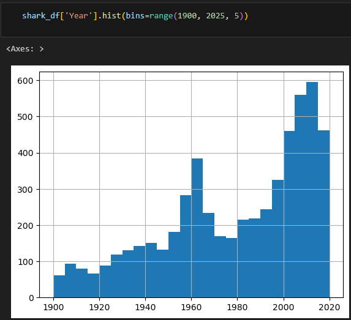
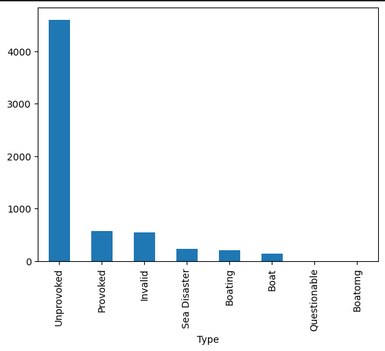
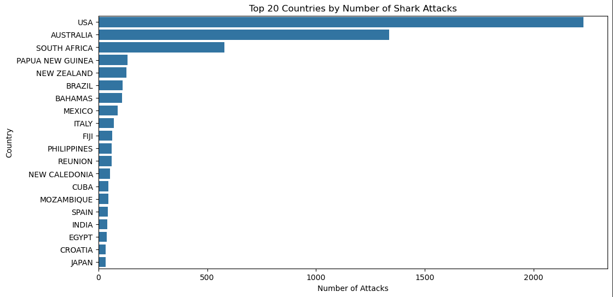
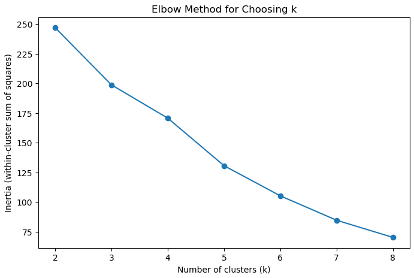
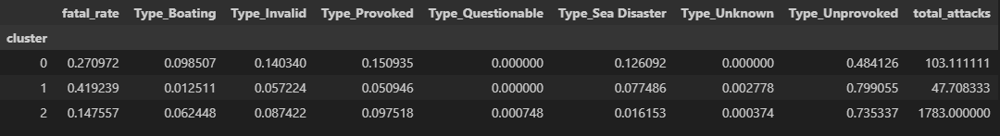
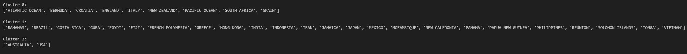

Global Shark Attacks - Geographical Clustering
An analysis of global shark attack incidents using geographical clustering.
Project Journal & Findings
Course: Data Mining · Shark Attacks Clustering
Introduction
Sharks are one of the most fascinating, and oldest apex predators on Earth. Overtime, many sharks have been going endangered due to hunting, overfishing, and pollution. However, they are also known to be scary, and people may want to avoid sharks if they can, or at least be aware of them, and perhaps avoid deadly locations. But how do we know which ones are actually deadly? This project will look into shark attack patterns using K-Means clustering.
What is Clustering?
Clustering is an unsupervised machine learning technique that groups things together and then discovers patterns or similarities withing the data and groups by itself. In this casem I used K-Means clustering, which basically means you make K amount of clusters (you the programmer chooses how many clusters or groups you want) and then the algorithm will categorize your data into those amounts of clusters. Then, you can see which data goes where, and find the patterns or similarities between them.
In K-Means, you have K amount of centroids (center of each clusters), and then the the model takes a data point (like a row of data) and assigns it to the closest centroid. Every time this happens, the centroid moves to the center of all the data points inside of it. Basically kind of like, the centroid updates its average or position based on each new data point added to the cluster. This continues until the centroid stops moving or moving reduces a lot. One important thing is inertia. Inertia is how far away each point is from the centroid. Lower inertia = better clustering. When you increase K, inertia lowers which is good, but then too many K clusters means you will end up overfitting the data.
The Data
The dataset I will be using is the Global Shark Attack dataset on Kaggle, compiled by the Global Shark Attack File. The dataset consists of 23 features, and 25723 rows of shark attack incidents. Some of the features include: Date, Location, Activity, Name of Shark, Fatal (Y/N), Type of Attack, and more. The features of very straightforward, and self-explanatory. Date is the date the attack occured, location is where it happened but specifically (maybe too specific), Area is usually the city or region but also volatile, and Country is the country it happened it. Activity is what the person was doing when the attack happened (swimming, surfing, fishing, etc) but contains so many unique values, Name of Shark is the species of shark that attacked, Fatal is whether the attack was fatal or not (Y/N), and Type of Attack is usually either unprovoked or provoked, but also contains values like boating. Unfortunately, the dataset consists of a lot of missing data, over 70% for most columns. For example, 76% missing for Date, Type, and Country, and 78% for Location. Therefore, I tried to focus on the columns that had the most data, and were relevant to my analysis.
Data Understanding & Visualization
I wanted to see basic statistics about the data first. For example, here are the the number of shark attacks throughout the years.
You can see that the number of shark attacks increases throughout the years, right? That makes sense, as the population grows, and more people are in the water, there are bound to be more shark attacks. However, I immediately thought that there was also more reporting counts. Especially with more media coverage, better technology and hospital/EMS practices. So I kept that in the back of my head.
Next, I wanted to look at what kind of attacks occured.
Here we can see that most shark attaks are unprovoked, which makes sense. I'm assuming most people aren't hunting or trying to pick a fight with sharks. However I noticed two things: Boat and Boating, and Boatomg. There is a clear misspelling in the data set, and Boat and Boating, to me, are the same. So in my pre-processing steps I do deal with those by combining them. From this, I do know that I want to give the clustering model the type of attacks, as they may be prevalent in certain areas, especially if it is NOT unprovoked.
Data Pre-processing
Since the dataset had a lot of missing data, I had to do some pre-processing steps to make sure the data was clean enough for the model. First, I removed almost columns that had no relevancy, such as href, pdf, and Source and Investigator. Then I looked at the rows with missing data, and had to choose carefully what to drop. Upon further inspection, columns like Activity and Location had way too many unique values (almost 50%), meaning it would end up as mostly noise for the model. It would also have been too much for me to group. Thus I dropped it.
As I said, there was a lot of missing data. Firstly, for Type, I grouped Boat, Boating, and Boatomg together to correct the misspelling and combine similar categories. Then, since I want to look at geographical locations, I want to prioritize countries. Thus, I dropped rows with missing Country values. I also really cared about fatality, so for those with missing values, I made them "Unknown" (~500 rows of missing data). After all these steps, I was left with 6,252 rows of data, which is still a good amount to work with.
Here is the data of the top 20 countries and their shark attacks after processing:
Modeling
As said before, I used K-Means clustering for this analysis. The reason? Truthfully it's because I used it in intro to machine learning, and wanted to try it again, and I was most comfortable with it. I could not tell you what agglomerative clustering is right now! However, I did try clustering with different amounts. I tried K=3 and K=5, because using the elbow method, or where intertia starts to decrease (line starts to flatten), I wanted to see the kinds of groups I could get. However, 5 clusters had 2 groups with only 1 country each, which is not useful. Thus, I went with K=3, and that is also where you can see the line start to flatten the most. One thing I had to do was also look at the count of attacks, as there are some with low counts resulting in extremely high or low fatality rates, which would be noisy or outliers or just misleading. I hypothesize that a lot of these other countries have a lot of underreported shark attacks, as the USA and Australia (first world countries) had super large counts compared to the rest.
Storytelling
Here we can see the different clusters and the countries that belong to them.
Here we can see our chosen 3 clusters. Now we can identify patterns. It looks like cluster 0 seems to have to smallest unprovoked rate, with a moderately high fatality rate (27%) and the highest invalid, provoked, and sea disaster rates. Cluster 1 has the highest fatality rat at 42.9%, the highest unprovoked rate at 79.9%, but only total attacks is only 47 on average. Cluster 2 has the smallest fatality rate at 14.7%, but it also has the second highest unprovoked rate at 73.5% but an extremely high total attack count average at 1783. This suggests that for cluster 0, there are many different types of attacks, about half provoked and half unprovoked, which lead to a decently high fatality rate at 27%. The shark attacks in these countries seem to be deadly. Cluster 1 suggests that these countries shark attacks are deadly at 41.9%, yet mostly unprovoked at 79.9%, however have small reports of shark attacks or just have less shark attacks at 47 on average. The small attack counts suggest that either shark attacks don't happen often in these countries, or that they are not being reported. It also seems like these attacks are extremely deadly. Cluster 2 shows a relatively small fatality rate at 14.7%, a similar unprovoked rate as cluster 1, but an extremely high attack count, meaning these countries get frequent shark attacks, or just a lot more recorded reports. This could mean that it is more likely to be bitten by a shark here, but relatively likely to survive.
Now here we can see the countries and their clusters. What's surprising is that South Africa is not in the same cluster as Australia and the USA, but those clusters likely exist due to the extremely high number of reported records, and/or lower fatality rate. Cluster 1 has the most countries, but that also makes sense as having a smaller mean average of reported shark attacks is understandable, as attacks being reported in the USA and Australia seems common. Cluster 0 may be countries to not visit and swim in, as many of those attacks were unprovoked.
Impact
The impact of this analysis is to help people decide where to swim. For example, maybe you're visiting the USA or Australia, and you want to determine if you want to swim. You know that there are a lot of reported shark attacks, but the fatality count, compared to other countries here that you may have visited, is lower. Another impact is that this lets people decide where to do further research, for example, they can see USA and Australia and want to do a regional or city based analysis to determine which places specifically are more dangerous. However, with so much missing data, this analysis may not be as accurate as it could be, and cause bad choices to be made due to inefficient data or modeling.
In conclusion, this k-means modeling represents how this data affects clustering, as there had to be a lot of filled in missing values, a lot of removal of rows, and thus picky feature choosing (or vice versa). Thus, this gave us smaller sample size and likely affected the clusters to not be as accurate or as separate as it could have been. However, even then, we can still note patterns. There are countries where you may be attacked even without provoking sharks (cluster 0), there are countries with lower reported shark attacks, yet very high fatality rates (cluster 1), and there is the USA and Australia with very high recorded counts, but a relatively smaller fatality rate at 14.7%. Thus, this data can help people decide where they want to swim, snorkel, scuba, or research.
Access
Click here to view this project on GitHub (the HTML): GitHub Repository
Click here to view the dataset on Kaggle: Kaggle Dataset Link